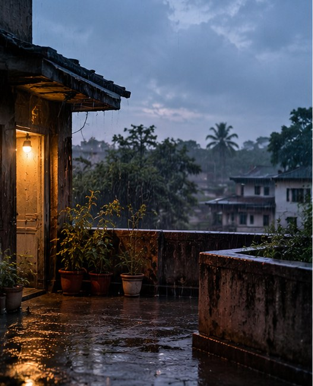

Horror and ThrillerThe Last RainApril 21, 2023Read

It was raining heavily. The curtains swayed in every direction with the wind. The rain had taken away the silence of the evening, making its gentle presence felt all around. Every now and then, the strong wind carried a few drops of rain onto the man sitting quietly on the veranda. He looked lost in thought. He was as lonely as the old house he had inherited from his ancestors, with its walls slowly losing their plaster. His eyes looked tired, and the illnesses of old age had begun to take over his body, one after another.
Suddenly, his wife appeared at the doorway.
"Why are you sitting here getting wet? Come inside."
"I like getting wet in the rain, Sulekha. Would you like to join me? Shall we go up to the roof?"
"Have you lost your mind at this age?"
The man didn't reply. He got up from the veranda and walked toward the front door. From there, he made his way to the stairs, with Sulekha beside him. Holding each other's hands, they slowly climbed to the rooftop. But strangely enough, the rain had stopped by the time they reached the top.
"Are you feeling sad?" Sulekha asked.
"No. Look, more clouds are gathering in the sky. It will rain again, Sulekha. Let's wait."
"Clouds are gathering in your heart too, my dear. You know, there was a day when clouds gathered in my heart as well. Even darker clouds."
"That day? Which day, Sulekha?"
Sulekha didn't answer. She walked toward the small rooftop garden and continued past it until she reached the very edge of the roof. There was no railing on that side, and the remaining part of the wall was weak and fragile. The plaster had become so loose that even the touch of a bird might make it fall. Still, Sulekha didn't stop. She had no reason to. She took a few more steps and began floating in the air. After all, she had been able to float like that since that very day.
The man followed her, as if something was pulling him toward her. He was growing restless.
"Teach me how to float like you, Sulekha. Tell me, which day did those clouds gather in your heart? Please, tell me."
But Sulekha said nothing. She kept floating here and there, moving with the wind like a bird. Without thinking much, the restless man began running toward her. He wanted to reach Sulekha. He wanted to float in the air just like her. But he couldn't. Instead, a sudden, heavy thud came from below, breaking the silence of the evening. Within moments, his white panjabi turned red.
"Monsoor, clouds gathered in my heart the day I saw you with another woman. The day you pushed me from this very spot and made me fall. Perhaps it's better this way. Now we can both float in the air, together, around the courtyard of this empty house."
The man had finally received Sulekha's answer. But he could no longer reply. His vision slowly began to blur. And then, the rain started again. Heavy rain. Gentle, rhythmic rain. Rain that took away all the silence of the evening once more. He was completely drenched.
SajjadApril 21, 2023Originally written in Bengali.